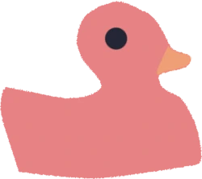
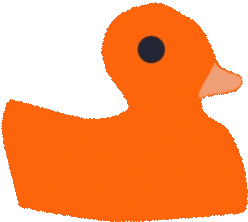
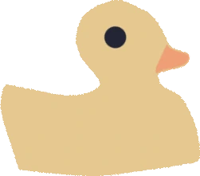
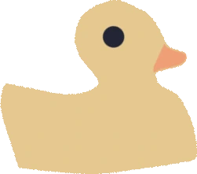

IDE i edytory kodu
Visual Studio Code (VS Code)
Rubber Duck Debugger — plugin, który wyświetla małą gumową kaczuszkę w rogu edytora. Możesz na nią kliknąć, a pojawia się "okno tłumaczenia kodu" — piszesz, co Twój kod powinien robić, pomaga to uporządkować myślenie.
Rubber Duck Assistant — plugin integrujący się z np. Copilotem lub ChatGPT, który prowadzi Cię przez tłumaczenie kodu — zadaje pytania w stylu: "Dlaczego ta zmienna jest tutaj globalna?", "Co powinno się stać, jeśli ta pętla nie zakończy się?.
JetBrains IDEs (IntelliJ IDEA, PyCharm, WebStorm itp.)
Pluginy typu Code With Me + Duck Mode (wewnętrzne rozwiązania niektórych zespołów). Możliwość stworzenia własnego live template np. "Duck Explain Session" → generuje gotowy szablon do opisania funkcji w komentarzach.
Vim, Emacs
Pluginy typu Rubber Duck Vim Plugin — prosta komenda np. :Duck otwiera bufor tekstowy do "rozmowy z kaczuszką".

Komunikatory
Slack
Emoji 🦆 jest nieformalnym sygnałem kulturowym:
- Wątek oznaczony 🦆 → "jeszcze próbuję sam (z kaczuszką), proszę nie odpowiadać od razu".
- Kanał #rubber-duck-debugging — dedykowany kanał na Slacku, gdzie ludzie publicznie tłumaczą swoje problemy.
- Boty Slackowe, które pomagają w tłumaczeniu kodu.
Microsoft Teams
Te same praktyki z emoji 🦆. Niektóre zespoły używają Teams Apps lub Power Automate, by zautomatyzować "kaczkowe" przypomnienia:
- Przed wysłaniem pytania na channel pojawia się przypomnienie:
- "Did you try explaining it to your duck first?"
Discord
- Kanały typu #debug-duck na serwerach developerskich.
- Boty Discordowe, które losowo przypominają o próbie Rubber Duck Debugging zanim się poprosi o pomoc.

Nauka i mentoring
Dlaczego to działa tak dobrze w edukacji?
Nauka programowania to nie tylko pisanie kodu, ale przede wszystkim rozumienie, co się dzieje i jasne tłumaczenie:
- Początkujący często mają w głowie "mgłę" — kod działa, ale nie wiadomo dlaczego;
- Tłumaczenie kodu kaczuszcze:
- Wymusza jasne myślenie,
- Ujawnia luki w rozumieniu,
- Pomaga odkryć błędy.
- Bardzo naturalna metoda rozwoju metakognicji (świadomości własnego myślenia)
Gdzie to się stosuje?
- Bootcampy programistyczne (np. JavaScript, Python, Fullstack Web Dev)
- Kaczuszka w pakiecie startowym:
- Uczestnicy bootcampu dostają gumową kaczuszkę razem z materiałami.
- Mentorzy uczą od pierwszego dnia:
- "Nie pytaj mentora od razu — spróbuj wyjaśnić kaczuszce".
- Na niektórych bootcampach jest rytuał "Talk to your duck first" przed każdym stand-upem.
 
